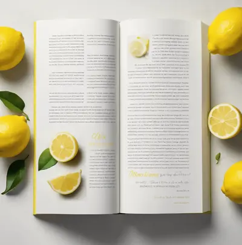
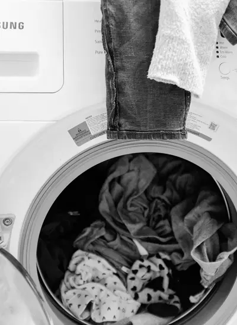

It's Time to Stop Spending All Day on Chores!
End highlighter headaches with lemon assistance!
Ever wish you could remove highlighter marks from a book? Lemon juice fades highlighter enough to make it virtually undetectable. Cut a lemon in half and get some juice on a cotton swab. Run the swab over the highlighted text and watch the color fade. Lemon juice from a container also seems to do the trick. Though not quite as well on the pieces we tested, and the older the mark, the more stubborn it is to remove.
Let Your Dog Eat Their Food, Not Your Time!
Instead of buying a slow-feed bowl, I drilled holes into a 12 in. length of 2 in. PVC pipe and capped the ends. I fill the tube with puppy food, and he has to roll it around to get the food to fall out of the holes. My puppy gets all the food he needs without the mess that comes from eating too fast. Be sure the holes are large enough for the food to come out!
Label Your Keys to Unlock Time for What You Love!
Between the car, house, shed and garage, I have a whole pocket full of keys. To make it easier to quickly find my most used keys, I paint both sides of the key head with brightly colored nail polish. I use a different color for each key. The nail polish is extremely durable and you’ll be surprised how much longer it lasts than spray paint.
Spend Less Time Ironing, Spend More Time Piloting!
Ditch the time-consuming iron or handheld steamer to get wrinkles out of a shirt or slacks. Throw a few ice cubes or a wet washcloth in the dryer with your wrinkled clothes. As the ice melts and the water turns to steam, it will remove the wrinkles.